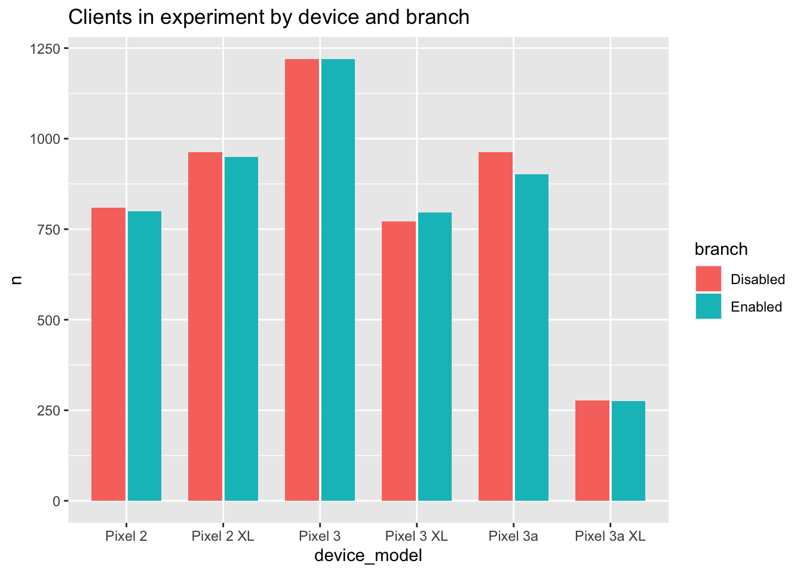
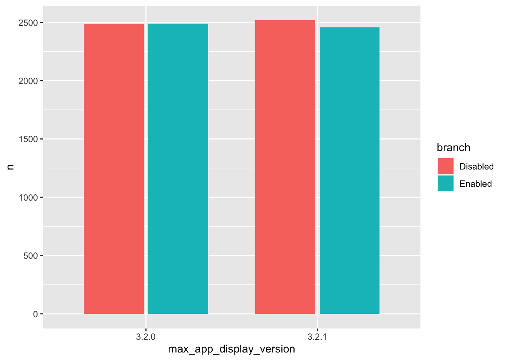
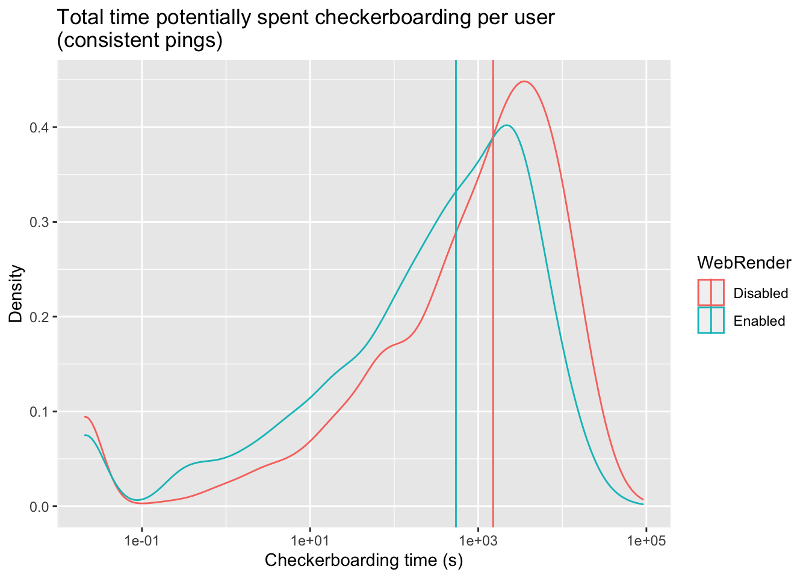
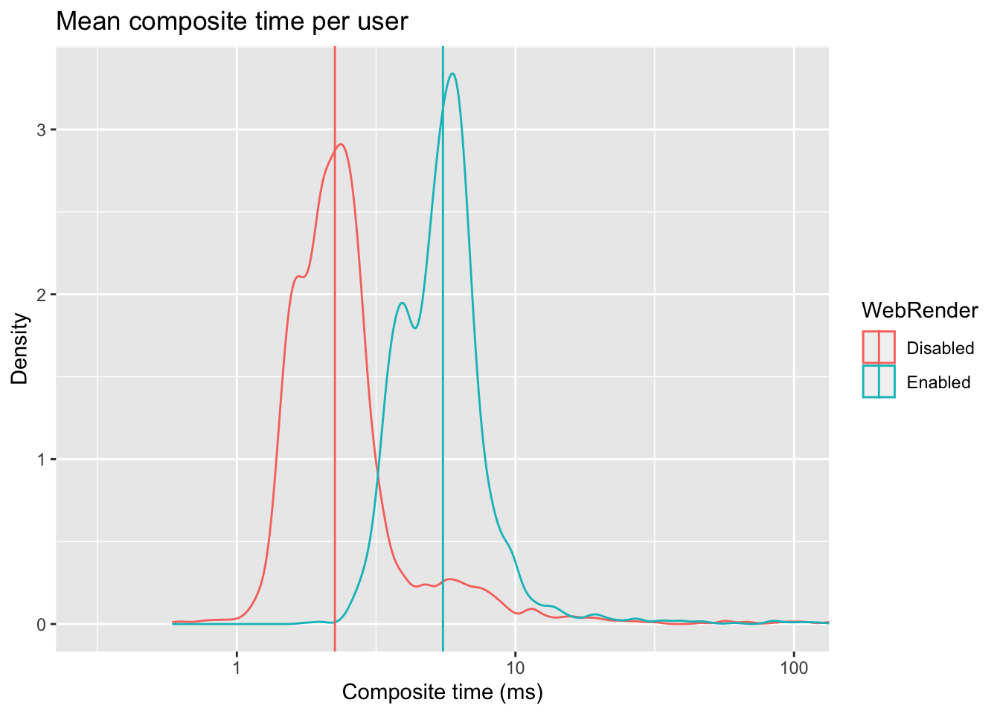
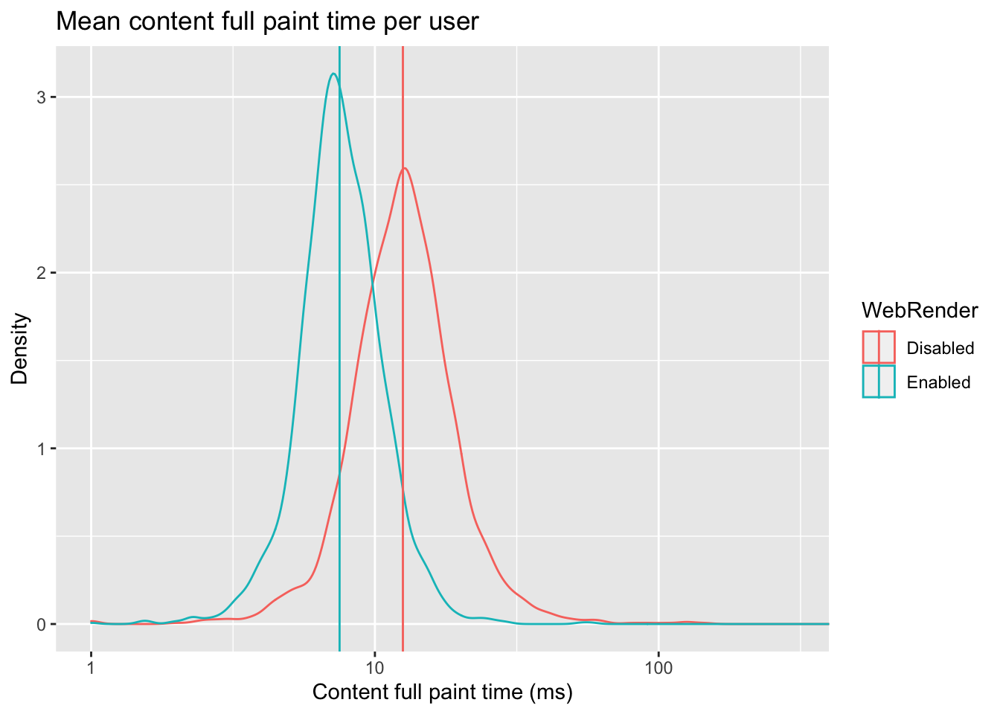
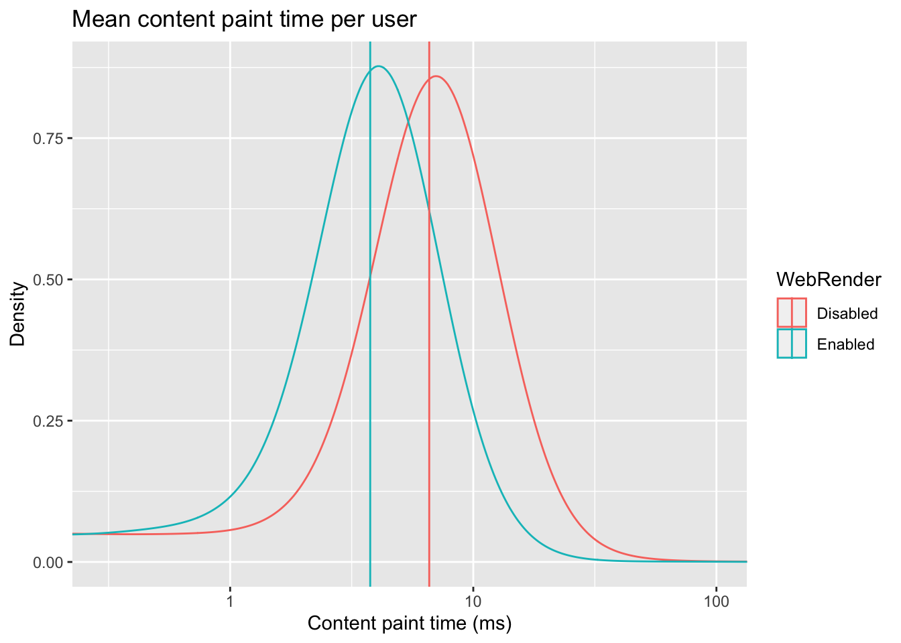
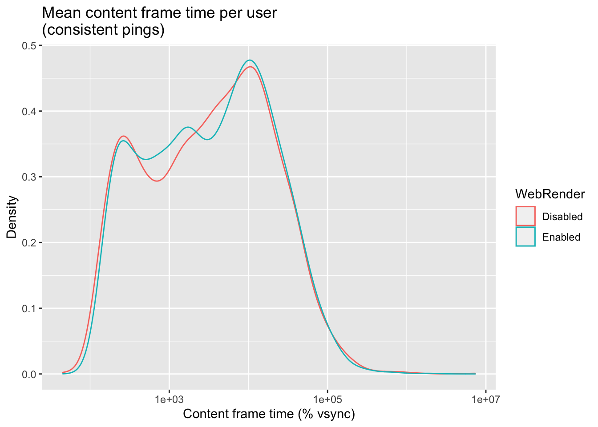
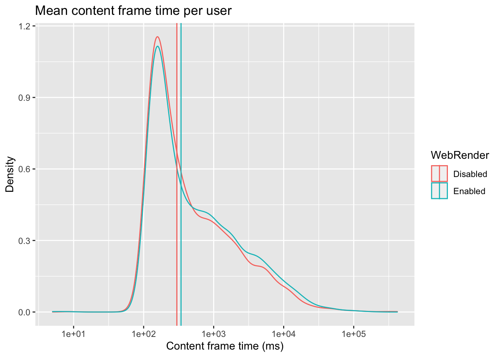

Webrender Fenix perf experiment
tdsmith
2020-02-19
Abstract
The performance effects of enabling WebRender in the 3.2.0/3.2.1 release of Firefox Preview for Android (“Fenix”) on Pixel 2/3 devices were measured with an A/B experiment.
As expected, composite time increased. Page load time, checkerboarding time, and paint times all decreased. Content frame time increased.
Introduction
The WebRender perf experiment was deployed to 100% of both “normal” and “XL” variants of the Pixel 2, Pixel 3, and Pixel 3a devices.
The experiment was supposed to start January 27, 2020; it actually went live January 31, after fixing a Mako filter expression error.
The experiment was affected by a Glean bug that caused pings from enrolled users to fail schema validation. The schema was adjusted February 4 to accept these pings. Pings between January 31 and February 4 were dropped.
This report includes pings received between February 4 and February 18, 2020.
We received pings from about 5,000 clients in each branch.
The Pixel 3 variants were more common than the Pixel 2 variants, but all models were represented:

About 3,000 clients in each branch sent us pings that contained any compositing activity. About half of all received metrics pings did not contain any compositing activity, or had a compositor that was inconsistent with the experiment branch the client was supposed to be enrolled in. The former condition predominated.

Two known issues are expected to contribute to the large volume of metrics pings without composites:
Bug 1597980 resulted in
metricspings being sent in cases where there was no client activity. The fix had landed in Fenix Nightly, but not Release, before this experiment launched, and was not deployed to our clients.Bug 1612283 resulted in Glean failing to accumulate samples from GeckoView for short user sessions (less than 5 seconds). It’s not clear how many clients or pings were affected. The fix landed in Glean’s master branch during the study and was not deployed to clients.
This experiment was overlaid on top of an experiment to assess the impact of changing compiler optimizer flags. The separate legs were delivered through the Play Store as different Fenix versions – either 3.2.0 or 3.2.1.
The randomization mechanisms sorting users into branches for each study were independent and our users were equally balanced between the optimizer-flag experiment branches, so I assert that the optimizer-flag study is ignorable and do not consider it further.

The plot below summarizes the difference in the median client’s average performance metrics with Webrender enabled, with bootstrapped 95% confidence intervals. The “consistent compositor_last_seen” series is probably the correct value to reference. Because we don’t completely understand why compositor was sometimes missing or inconsistent, the “all pings” series is presented for comparison, in case pings were missing for reasons that could bias the results, but (except for total checkerboarding time) the results only include pings where there was any activity for that metric. In cases where the “consistent compositor” and “all pings” results show different trends, we should interpret the results with caution.
The “all pings” result for the total checkerboarding time was zero because the median client in the “all pings” case experienced no checkerboarding (and perhaps had no web content activity at all).
Page load time

Total checkerboarding time

Composite time

Content full paint time

Content paint time

Content frame time (vsync)

Content frame time (paint)
